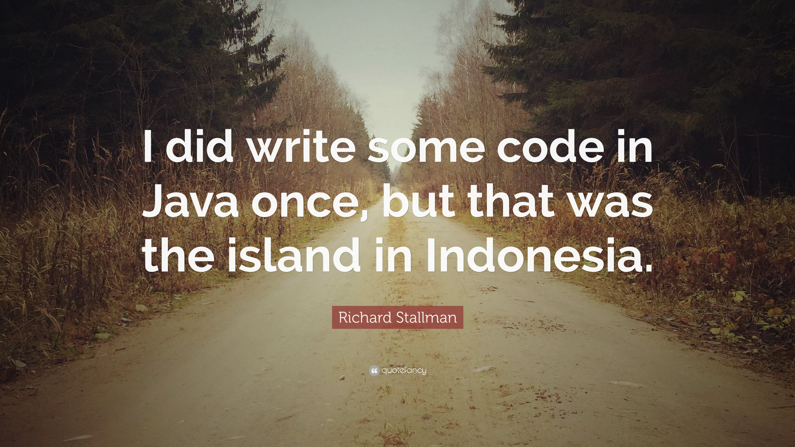

The Free Software Foundation (FSF) is a non-profit organization founded by Richard Stallman[5] on October 4, 1985, to support the free software movement, which promotes the universal freedom to study, distribute, create, and modify computer software, with the organization's preference for software being distributed under copyleft ("share alike") terms, such as with its own GNU General Public License.The FSF was incorporated in Boston, Massachusetts, US, where it is also based.
